Accuracy, Efficiency, and Expansion: Surveying the Advancements in DETR during 2021-2023
Abstract
DEtection TRansformer (DETR) is a framework for object detection that views it as a direct set prediction problem, removing the need for hand-designed components and utilizing a transformer encoder-Decoder architecture to improve the accuracy and efficiency of object detection. Within two years, Detection Transformer (DETR) has undergone a remarkable transformation. This survey dissects key advancements, analyzes its current state, and ponders its future, revealing how DETR redefines object detection.
Key Words: Object Detection, Transformer, Detection Transformer
Introduction
Object Detection refers to the task of automatically identifying and localizing objects within an image or video. It involves using computer vision techniques, such as deep learning models, to analyze and classify regions of an image that contain objects of interest. As a fundamental building block of computer vision, object detection has undergone a remarkable transformation in recent years. Early efforts relied on meticulously crafted features and laborious two-stage pipelines, struggling to achieve both accuracy and efficiency. However, the emergence of DETR (Detection Transformer) in 2020 marks a pivotal moment, introducing a novel paradigm that transcends limitations and unveils exciting possibilities for the future of object detection.

DETR views object detection as a set prediction problem and introduces a remarkably concise pipeline for object detection. It involves using a Convolutional Neural Network (CNN) to extract foundational features, which are then input into a Transformer for relationship modeling. The resulting output is matched with ground truth on the image using a bipartite graph matching algorithm. The detailed methodology of DETR is illustrated in the above diagram, and its key design inceptions include:
Modeling object detection as a set prediction problem:
DETR conceptualizes object detection as a set prediction problem. Instead of treating each object individually, DETR aims to predict the entire set of objects collectively. This global perspective is a departure from the conventional paradigm.
Bipartite Matching for Label Assignment:
To accomplish label assignment, DETR employs a bipartite matching strategy. This involves using the Hungarian algorithm, a combinatorial optimization algorithm, to determine the optimal matching between the predicted objects and the ground truth. This approach ensures effective and accurate label assignment.
Transformer-based Encoder-Decoder Structure:
DETR leverages the Transformer architecture with an encoder-Decoder structure. This choice transforms object detection into an end-to-end problem, eliminating the need for post-processing steps like Non-Maximum Suppression (NMS). The Transformer's attention mechanism enables global context understanding, contributing to improved detection accuracy.
Avoidance of handcrafted anchor priors:
Unlike traditional methods that rely on manually defined anchor priors, DETR avoids such handcrafted position prior information. This is achieved through its set-based approach, making the model more flexible and less dependent on predefined anchor boxes.
Given these observations, it's evident that DETR introduces a fresh paradigm to the field of object detection by framing it as a set prediction problem. However, DETR itself has certain limitations, such as:
- Extended Training Time: DETR generally requires a longer training time to converge, for example, it may need 300-500 epochs on COCO to achieve satisfactory results.
- Performance Variation with Object Size: In comparison to detectors like Faster RCNN, DETR tends to perform better on larger objects but exhibits relatively lower performance on smaller objects. There is ample room for improvement in terms of training efficiency and the ability to detect small targets.
Despite these limitations, DETR's unique approach has opened up new possibilities in object detection, and ongoing research is aimed at addressing these challenges for further advancements. The Overall Structure of Our Survey is shown on Figure 2.
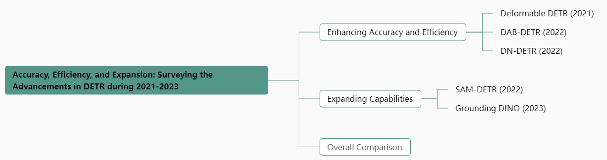
Our survey delves into the key advancements made in DETR from 2021 to 2023, highlighting how researchers have tackled its limitations and pushed the boundaries of its performance. Our contributions can be summarized below:
- Systematic Exploration of DETR Improvement Directions: This paper provides a comprehensive and systematic review of the various improvement directions for DETRs. It delves into the nuanced aspects of enhancing the performance and capabilities of DETR in the context of object detection.
- Efficiency Evaluation and Comparative Analysis of DETR Improvement Directions: Through empirical assessments and comparative analyses, we aim to quantify the impact of these improvements on the overall efficiency and effectiveness of the DETR model.
- Exploring the Integration of DETR with Other Machine Learning Methods: In addition to internal enhancements, this paper explores the synergy between DETR and other machine learning methods. By investigating potential collaborative approaches, we aim to identify novel strategies that leverage the strengths of DETR in conjunction with complementary techniques from the broader machine learning landscape.
Enhancing Accuracy and Efficiency
Despite DETR's impressive object detection capabilities, its performance on small objects restrict its wider application. Thankfully, recent years have witnessed remarkable progress in addressing these limitations. This section delves deeper into these advancements, exploring how researchers are enhancing DETR's accuracy and robustness to unlock its full potential in diverse object detection tasks.
Deformable DETR
Deformable DETR points out the reasons behind the slow convergence speed and poor detection performance on small objects in DETR, which are attributed to the flaws in the processing logic of image features by the Transformer. Specifically, during initialization, the Transformer initializes weights with minimal differences for all queries within its self-attention module. This causes the network to require extensive training time to converge the weight matrix to appropriate values. Additionally, the time complexity of the attention module used in the Transformer grows quadratically with the increase in the number of pixels in the image. This high cost limits the input feature map size used in the DETR model, consequently restricting the model's detection performance on small targets.
o address these issues, Deformable DETR proposes the Multi-scale Deformable Attention (MSDA) to replace the self-attention in the Encoder and the cross-attention in the Decoder. Based on this design, DETR incorporates a multi-scale feature detection process using MSDA, which not only provides DETR with multi-scale advantages but also reduces computational requirements. The computation flow of MSDA is illustrated in the following diagram.
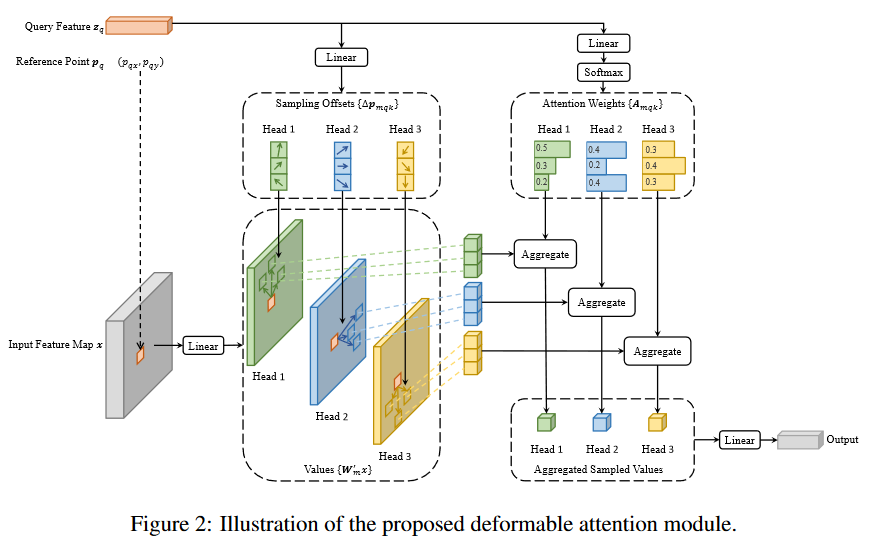
Specifically, the design of the MSDA architecture allows each feature pixel to interact and compute with only a subset of other pixels obtained through sampling during the attention calculation process. This significantly accelerates model convergence while reducing computational complexity and required spatial resources.
In the classical Transformer, the multi-head attention mechanism can be represented by the following formula:
\[ MultiHeadAtten(z_q,x)=\sum_{m=1}^MW_m[\sum_{k\in\Omega_k}A_{mqk}\cdot W_m'x_k] \]
Where \(z_q\) represents the query, which is obtained by linear transformation of \(x\). \(q\) and \(k\) are the corresponding indices for query and key, respectively. \(\Omega_k\) denotes the set of all keys. \(m\) represents the index of the attention head, and \(W_m\) is the result of applying a linear transformation on the values after the attention is applied. \(W_m'\) is used to transform \(x_k\) into the value. \(A_{mqk}\) represents the normalized attention weight.
From this, we can see that in the computation of the multi-head attention in the Transformer, each query interacts with all positions of the keys to calculate attention weights, and these weights are then applied to all the corresponding values.
The Deformable attention mechanism proposed in Deformable DETR can be represented by the following formula:
\[ DeformAttn(z_q,p_q,x)=\sum_{m=1}^MW_m[\sum_{k=1}^{K}A_{mqk}\cdot W_m'x(p_q+\Delta p_{mqk})] \]
As we can see, the deformable attention mechanism introduces two variables, \(p_q\) representing reference points and \(\Delta p_{mqk}\) representing reference position offsets, during the computation process. It is important to note that \(\Delta p_{mqk}\), similar to attention weights, is indirectly calculated through an intermediate fully connected layer. Each query computes interpolated values based on the sampled points and offsets, enabling it to sample K positions within each attention head and interact only with the pixels at those positions. This approach addresses the slow convergence issue caused by the global averaging of weights in the original multi-head attention mechanism.
Deformable DETR also addresses the limitation of the original attention mechanism, which is its inability to handle multi-scale feature map inputs. It further extends the deformable attention mechanism to a multi-scale deformable attention mechanism.
\[ MSDeformAttn(z_q,\hat p_q,\{x^l\}^L_{l=1})=\sum_{m=1}^MW_m[\sum_{l=1}^L\sum_{k=1}^{K}A_{mlqk}\cdot W_m'x(\phi_l(\hat p_q)+\Delta p_{mlqk})] \]
The multi-scale deformable attention mechanism introduces a variable \(l\) representing the number of feature map scales, allowing simultaneous attention computation on multiple scales of feature maps. \(\phi_l\) represents a mapping process that maps normalized coordinates to various feature layers. This extends the position encoding from a single feature map to multiple feature maps (implemented by adding a learnable position encoding layer representing the feature map scale number on top of the sine position encoding). Additionally, during the computation of the multi-scale deformable attention mechanism, the reference point \(p_q\) is normalized to obtain \(\hat p_q\), scaling its range to [0, 1]. As a result, each query samples K points on each feature layer, computes attention outputs separately for each feature scale, and then aggregates them together. Finally, the aggregated attention is multiplied with the value matrix (denoted as \(W_m\)) corresponding to that attention head.
In summary, the work of Deformable DETR keenly recognizes the reasons behind the slow convergence and poor detection performance on small objects in DETR, which are attributed to the attention computation module of the Transformer. The Transformer models dense relationships globally, requiring the model to spend a long time learning to focus on meaningful sparse positions. This, in turn, leads to high computational complexity and consumes significant spatial resources. Recognizing that learning sparse spatial positions is a strength of Deformable Convolutional Networks (DCN), but they lack the ability to model relationships, the authors combine DCN with the Transformer and make significant improvements tailored to the characteristics of object detection tasks. This combination greatly enhances the convergence speed and detection capability of DETR, particularly for small objects.
DAB-DETR
Through a more insightful understanding of the details, DAB-DETR addresses the issue in the original DETR where the learnable query used in the Cross Attention module of the Decoder lacks positional prior information during initialization. DAB-DETR models the query in the Decoder using four-dimensional anchor boxes. This approach not only enhances the interpretability of the DETR query but also accelerates the model's convergence speed.
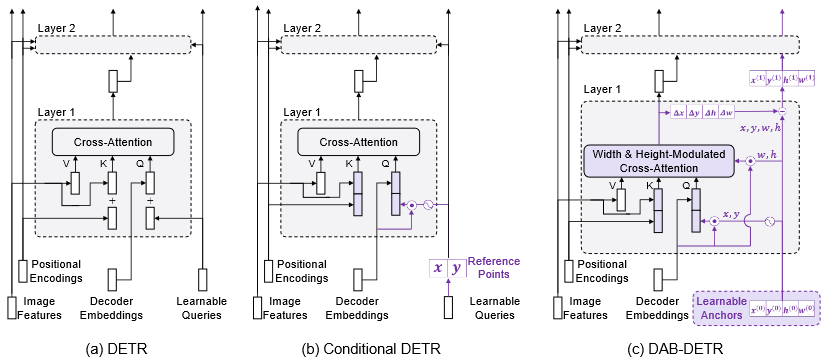
In DETR, Conditional DETR, and DAB-DETR, the structures related to Cross-Attention are compared as shown in Figure 3. It can be observed that DAB-DETR directly replaces the Learnable Queries used in the original DETR with anchor boxes, providing further clarity on their significance during the training process. In DAB-DETR, when using Learnable Anchors to guide the Cross-Attention module in computing the feature map, the positional query representing the top-left corner of the bounding box \((x, y)\) is encoded using sine and cosine functions and multiplied with the Decoder Embeddings vector initialized as a zero matrix to form the Q vector for Cross-Attention computation. During the Cross-Attention computation, the Learnable Anchors representing the height and width of the bounding box \((w, h)\) participate in modulating the attention map output. After each layer of Cross-Attention computation, the module outputs the offset of the anchor box (corresponding to an additional globally shared MLP structure) to serve as the basis for progressively refining the Learnable Anchors.
Starting from the formulas, we have the computation formulas for the original Cross-Attention and position-related attention:
\[ Attn((x,y),(x_{ref},y_{ref}))=\frac{PE(x)\cdot PE(x_{ref})+PE(y)\cdot PE(y_{ref})}{\sqrt{D}} \]
In the formula, \((x, y)\) and \((x_{ref}, y_{ref})\) correspond to the query and key in the Decoder, respectively. The key is derived from the Positional Embeddings of the Encoder. The function PE represents the process of positional encoding, which is typically implemented using sine and cosine functions in the original implementation of DETR.
On the other hand, DAB-DETR introduces adjustable parameters based on Learnable Anchors for the height and width of the key in the adaptive Cross-Attention:
\[ ModulateAttn((x,y),(x_{ref},y_{ref}))=\frac{PE(x)\cdot PE(x_{ref})\frac{w_{q,ref}}{w_q}+PE(y)\cdot PE(y_{ref})\frac{h_{q,ref}}{h_q}}{\sqrt{D}} \]
In the formula, \(w_q\) and \(w_{q,ref}\) represent the width of the Learnable Anchors and the scale adjustment factor calculated by the layer itself, respectively. The same representation method applies to the height as well. The scale adjustment factor is computed using the following formula:
\[ h_{q,ref}=w_{q,ref}=MLP^{(csq)}(C_q) \]
In the formula, \(MLP^{(csq)}\) consists of a linear layer and a ReLU activation layer, and \(C_q\) represents the content query received by the Cross-Attention module.
To sum up, DAB-DETR modifies the Cross-Attention in DETR by reinterpreting the Learnable Queries using Learnable Anchors to design appropriate positional priors. It also introduces a more efficient layer-wise updating mechanism for the Learnable Queries. These modifications not only improve the accuracy but also further accelerate the convergence speed of DETR.
DN-DETR
The result of the Hungarian matching algorithm used in DETR is highly sensitive to the values of the cost matrix. Even slight differences in the computed cost matrix can lead to significantly different matching results. Therefore, in the early stages of training, the optimization objective of the model becomes ambiguous and unstable, resulting in ambiguity and making the optimization process more challenging. As a result, the model requires a longer convergence time.
DN-DETR addresses this issue by combining the Hungarian matching task with a denoising task during the training process to accelerate the convergence of matching queries to ground truth labels. However, during the inference process, the denoising inference task is not performed, ensuring that this training strategy does not impact the model's inference speed. An overview of the training strategy proposed by DN-DETR is shown in the following diagram.
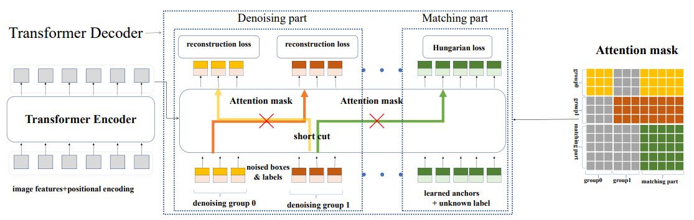
From the diagram, we can observe that DN-DETR introduces parallel network structures in the Decoder part of DETR, corresponding to the denoising training. DN-DETR allows for the inclusion of multiple denoising training groups within the network. These groups receive inputs obtained by adding noise to the ground truth (referred to as gt) boxes and their training objective is to reconstruct the original gt boxes. The noise injection process in DN-DETR is divided into two parts: position and content. The position part involves adding random perturbations to the \((x, y, w, h)\) coordinates of the gt boxes, while the content part corresponds to randomly replacing values in the embedding vector of the gt box labels. In the following text, we will provide further explanation of the noise injection process in DN-DETR.
Label Noise
In DN-DETR, the noise injection process for labels involves mapping the original labels to an intermediate embedding space and then applying random drift to the embedding vector corresponding to the gt labels in that space. The implementation is similar to the use of word embeddings in NLP. It involves looking up the corresponding vector in a label embedding matrix based on an integer value. Therefore, it is necessary to include an embedding matrix in the model, where both the original label embedding vectors and the noise-injected embedding vectors are stored. The noise-injected embedding vectors still correspond to the original integer labels.
Considering that label noise may impact the original Hungarian matching task, DN-DETR appends an indicator vector after the Class Label Embedding to indicate whether the current task is denoising or Hungarian matching. Additionally, in the denoising task, where the content of the query corresponds to the noise-injected labels, the labels associated with the query in the Decoder are initialized as the embedding vector of the None-object class (representing non-detection targets) in the label embedding matrix. This ensures that the initial state of the query is within the label space. These modifications are based on the Decoder of DAB-DETR and can be represented by the following diagram:

Bounding Box Noise
This noise injection process corresponds to perturbing the position components of the query, namely the Learnable Anchors: \((x, y, w, h)\). Specifically, the noise injection can be divided into center point displacement and scale scaling. Center point displacement involves sampling a perturbation parameter \(\lambda_1\) from a uniform distribution, and then recalculating the center point \((x_{cnew}, y_{cnew}) = ((1 \pm \lambda_1)x_c, (1 \pm \lambda_1)y_c)\), where \(x_c = x + \frac{w}{2}\) and \(y_c = y + \frac{h}{2}\). Scale scaling involves randomly sampling another perturbation parameter \(\lambda_2\) from a uniform distribution, resulting in scaled width and height of \((1 \pm \lambda_2)w_c, (1 \pm \lambda_2)h_c\). The impact of different noise scales on training accuracy is shown in the following figure:
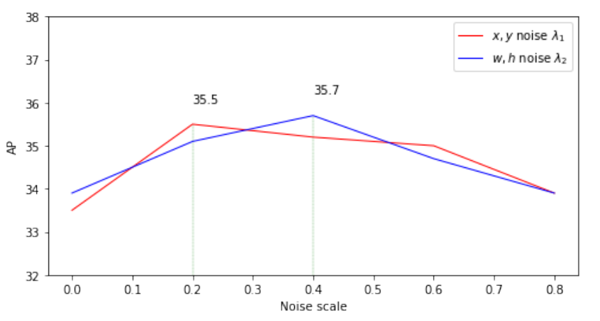
Denoising Group
Similar to the multiple detection heads in two-stage object detection, DN-DETR also introduces multiple denoising heads responsible for reconstructing the ground truth (gt) in the structure of the denoising task. Each gt is predicted by a noise-injected query in each group, resulting in multiple queries corresponding to a single gt. The denoising groups aim to guide the Hungarian matching task group to better learn the correspondence between queries and gts during training but are not invoked during inference. Therefore, during training, DN-DETR establishes a one-to-many relationship from gt to query, while during inference, it only involves a one-to-one relationship.
Attention Mask Matrix
Since the noise-injected queries are generated by drifting the gts in the original space, they can be considered as augmented samples of the training data, carrying a significant amount of the original information. Therefore, it is necessary to design the mask matrix appropriately to satisfy the following three conditions:
- Queries in the Hungarian matching task should not have visibility of the queries in the denoising task.
- Queries within different groups in the denoising task should not have visibility of each other.
- Visibility is allowed in all other cases.
Matching Performance Metric
DN-DETR introduces an IS (Index Stability) metric to measure the stability of the Hungarian matching task in the DETR model. The formula for IS is as follows:
\[ IS^i=\sum_{j=0}^{N}{\mathbb{1}(V_n^i\neq V_n^{i-1})} \]
In the above formula, let \(O^i={O_0^i,O_1^i,O_2^i,\ldots,O_{N-1}^i}\) represent the predicted results decoded by the model at the \(i\)-th epoch, where \(N\) represents the number of predicted objects. Let \(T={T_0,T_1,T_2,\ldots,T_{M-1}}\) represent the objects in the image, where \(M\) represents the number of objects in the image. We can use \(V^i={V_0^i,V_1^i,...,,V_{N-1}^i}\) to represent the matching index vector, i.e., \(\left.V_n^i=\left\{\begin{array}{ll}m,&\text{if }O_n^i\text{ matches }T_m\\-1,&\text{if }O_n^i\text{ matches nothing}\end{array}\right.\right.\)。The IS metric also involves an indicator function \(\mathbb{1}(V_n^i\neq V_n^{i-1})\), which is 1 when the matching results of the previous round are inconsistent with the current round, and 0 otherwise. Based on this metric, DN-DETR compares the Hungarian matching stability of DETR and DAB-DETR, and the results show that DN-DETR, with the guidance of the denoising task, achieves higher stability.
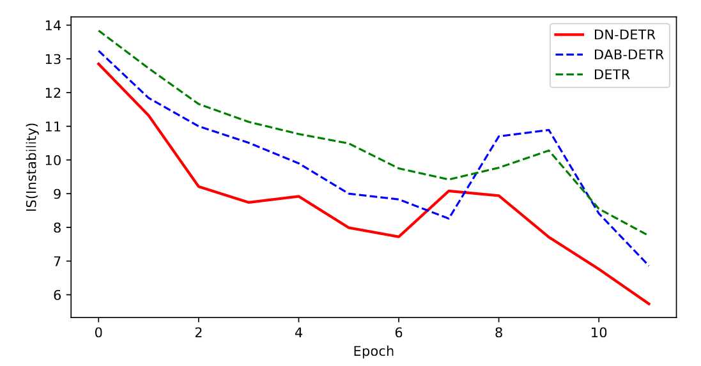
Expanding Capabilities
While DETR has emerged as a successful method for object detection, its potential extends beyond this initial application. This section delves into exciting new possibilities by exploring how DETR can be combined with other machine learning techniques, such as semi-supervised learning. By leveraging unlabeled data and collaborative training strategies, we can unlock enhanced accuracy, efficiency, and robustness, enabling DETR to tackle a wider range of tasks and contribute even more to the field of computer vision.
SAM-DETR
The core idea of SAM-DETR is to leverage the excellent performance of Siamese Networks in various matching tasks, allowing the object query in Cross-Attention to more easily focus on specific regions. Some of the structures involved in SAM-DETR are illustrated in the following diagram：
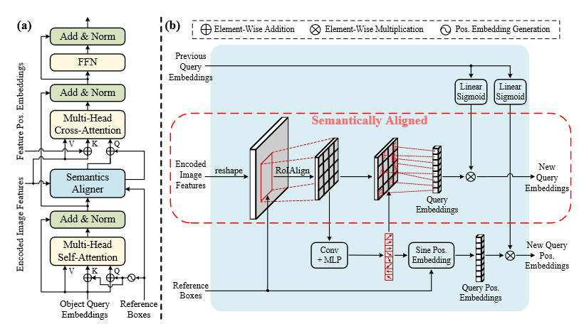
The upper diagram (a) illustrates the structure of one decoder in SAM-DETR. In this model, a Semantics Aligner module is inserted before each layer of Cross-Attention in the decoder. This module resamples, with reference to the input image features, each object query input into the Cross-Attention, ensuring alignment between the two. On the other hand, diagram (b) depicts the specific workflow of Semantics Aligner for an individual object query.。
Achieving Semantic Alignment through Resampling
For each object query, the Semantics Aligner models a reference box to constrain the resampling range, known as the Reference Boxes in the diagram. For each reference box, the Semantics Aligner employs RoIAlign to sample its image features, obtaining the region of interest. It then uses these region features to predict the coordinates of the most discriminative salient points. Subsequently, the Semantics Aligner extracts this information as an embedded vector for the object query with aligned semantics. After weighting adjustment based on the previous object query embedding vector, the new object query is output.
Resampling Using Salient Point Features
Salient points of an object (including boundary points, endpoints, strong semantic points, etc.) are crucial for its recognition and localization. Semantics Aligner samples features from these salient points, and after weighted adjustment, they serve as the output of Semantics Aligner. The calculation of salient points involves convolution and MLP operations on the region of interest, predicting a total of 8 points of interest. These computed points of interest are concatenated together after bilinear interpolation for calculating the new object query embedding. Additionally, they are used to compute the positional encoding for the current stage.
Re-weighting Currently Computed Features Using Previous Information
The previous object query still contains information useful for Cross-Attention. To effectively leverage this information, the author generates re-weighting parameters from the previous object query, which are then applied to re-weight the features of the new object query. This ensures that the model can effectively utilize prior information while maintaining semantic alignment between the object query and image features.
Grounding DINO
Grounding DINO combines contrastive learning with DINO, a DETR object detector, empowering DETR-like models to address open-world object detection problems. Simultaneously, it further enhances both the inference efficiency and detection accuracy. The model structure of Grounding DINO is illustrated in the following diagram:
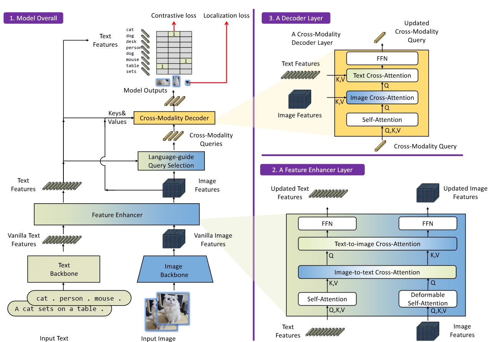
From the above diagram, we can observe that Grounding DINO introduces a Text Backbone alongside the Image Backbone to handle text sequence inputs, and the fused features of both are utilized for object detection tasks. Additionally, Grounding DINO employs a feature enhancer to perform feature cross-fusion between image and text features. It uses a language-guide query selection module to initialize region queries guided by text and employs a cross-modality Decoder for bbox prediction tasks.
Grounding DINO investigates the handling structure of input images for object detection tasks in both open-set and closed-set scenarios. To enable models designed for traditional closed-set tasks to handle detection tasks in open-set scenarios, Grounding DINO performs feature enhancement at three key locations: Neck, Query initialization, and the detection head. The specific methods of feature enhancement are detailed in the diagram below.
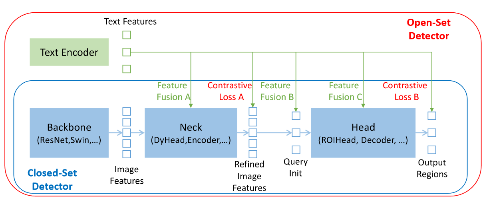
The three aspects of feature enhancement mentioned above are the three directions in which Grounding DINO seeks improvement. In the following, we will introduce the new technologies introduced by Grounding DINO from these modules:
Feature Extraction and Fusion Enhancement
In terms of feature extraction, the author employs Swin Transformer as the image backbone and BERT as the text backbone. The extraction of image features is similar to previous DETR variants, utilizing a multi-scale approach.
For text feature extraction, Grounding DINO integrates both sentence-level and word-level representations. Recognizing that sequence dependencies for individual labels are unnecessary in object detection, it proposes modeling text sequences in a sub-sentence level manner. The comparison of these modeling approaches is illustrated in the diagram below.
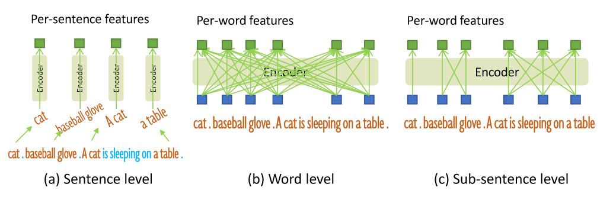
In the sentence-level approach, the entire sentence is encoded into a single feature, retaining only the phrases relevant to the ground truth (gt) and disregarding finer-grained information within the sentence, such as color or position. On the other hand, the word-level approach can simultaneously encode names of multiple categories but introduces many unnecessary dependencies between categories, leading to interactions between unrelated classes. In the sub-sentence level approach proposed by Grounding DINO, the author introduces an attention mask to block connections between category names, avoiding dependencies between unrelated classes while capturing features of multiple labels at the word level.
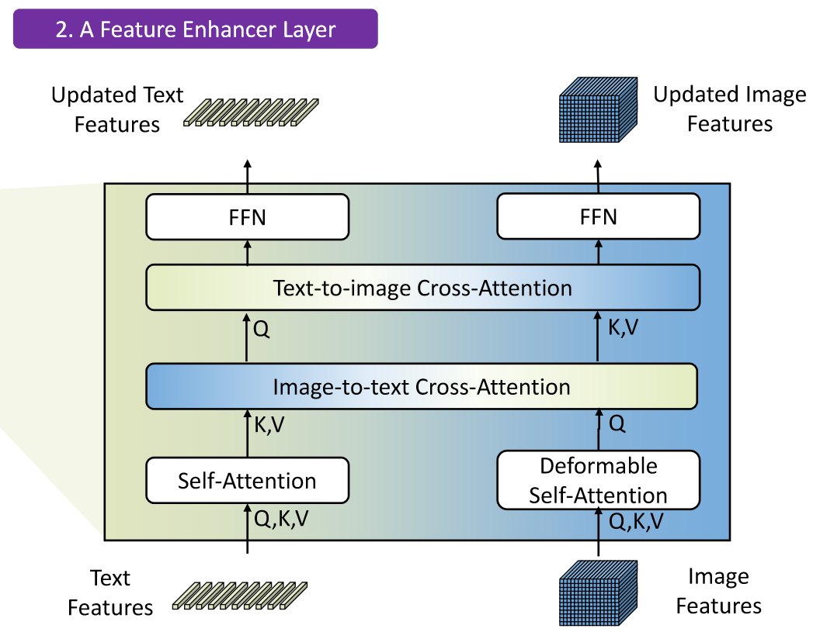
For feature fusion enhancement, Grounding DINO draws inspiration from GLIP's work and designs a cross-enhancement module as shown in the diagram above. It utilizes cross-enhancement between text-to-image and image-to-text, followed by a Feedforward Neural Network (FFN) to generate updated text and image features.
Query Selection Guided by Natural Language
Grounding DINO introduces a language-guide query selection module to filter image features based on the characteristics of the text sequence, selecting those with higher similarity to the text sequence as queries for the Decoder. The PyTorch code for this module is illustrated in the diagram below. Here, num_query is the number of queries used for the Decoder, set to 900; num_img_tokens and num_text_tokens are the token counts for image and text, respectively.
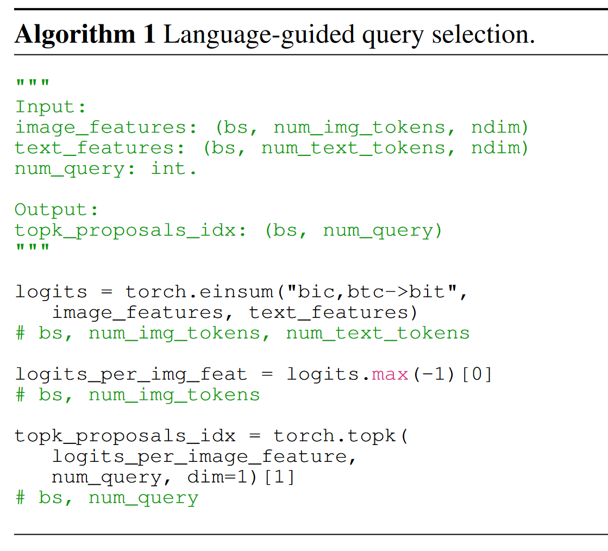
Cross-Modality Decoder
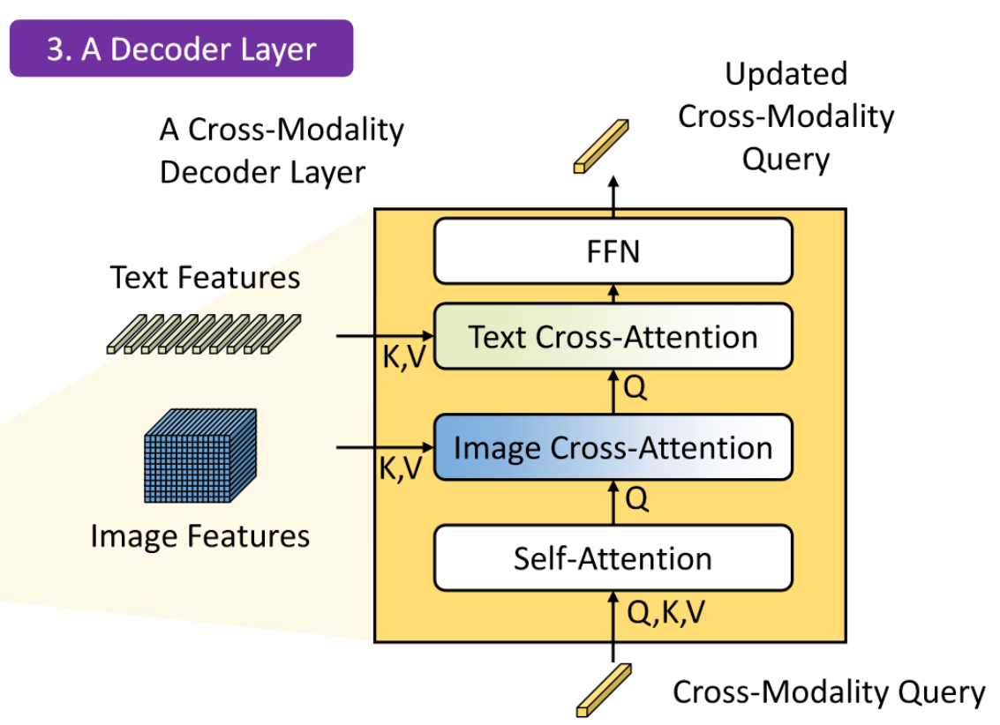
Grounding DINO utilizes a cross-modality decoder to combine text and image features. The most notable difference of this decoder compared to DINO is the addition of a cross-attention module corresponding to text, on top of the existing cross-attention for the image. Learnable Anchors, which originally corresponded only to image positions, now logically serve as cross-modality queries while retaining their original form. The updating process now involves the input text features as well.
Overall Comparison
In this section, we present five variants of the DETR (DEtection TRansformers) model that are covered in the report, as well as the performance metrics of the original DETR on a unified dataset. Starting from the improvement directions of each model, we analyze the impact of the improvement strategies chosen by these models on their object detection performance. Specifically, we will analyze the object detection performance of these models in closed-set scenarios on the COCO dataset, comparing their detection accuracy, training time, and inference throughput. Such comparisons contribute to a clearer and more comprehensive understanding of the methods adopted by these models.
Dataset
We show the effectiveness of DETR-based models on the challenging MS-COCO 2017 [13] Detection task. MS-COCO is composed of 160K images with 80 categories. These images are divided into train2017 with 118K images, val2017 with 5K images, and test2017 with 41K images. In all our experiments, we train the models on train2017 and test on val2017. Following the common practice, we report the standard mean average precision (AP) result on the COCO validation dataset under different IoU thresholds and object scales.
Comparasion
| Backbone | Model | epochs | AP | AP@50 | AP@75 | AP@S | AP@M | AP@L | GFLOPS | FPS | Params |
|---|---|---|---|---|---|---|---|---|---|---|---|
| ResNet-50 |
DETR | 500 | 42 | 62.4 | 44.2 | 20.5 | 45.8 | 61.1 | 86 | 28 | 41 |
| DAB-DETR | 50 | 42.2 | 63.1 | 44.7 | 21.5 | 45.7 | 60.3 | 94 | - | 44 | |
| DN-DETR | 50 | 44.1 | 64.4 | 46.7 | 22.9 | 48 | 63.4 | 94 | - | 44 | |
| SAM-DETR | 50 | 41.8 | 63.2 | 43.9 | 22.1 | 45.9 | 60.9 | 100 | - | 58 | |
| Grounding DINO | 12 | 48.1 | 65.8 | 52.3 | 30.4 | 51.3 | 63 | 464 | 8 | 172 | |
| ResNet-50-DC5 |
DETR | 500 | 43.3 | 63.1 | 45.9 | 22.5 | 47.3 | 61.1 | 187 | 12 | 41 |
| Deformable DETR | 50 | 46.2 | 65.2 | 50 | 28.8 | 49.2 | 61.7 | 173 | 19 | 40 | |
| DAB-DETR | 50 | 44.5 | 65.1 | 47.7 | 25.3 | 48.2 | 62.3 | 202 | - | 44 | |
| DN-DETR | 50 | 46.3 | 66.4 | 49.7 | 26.7 | 50 | 64.3 | 202 | - | 44 | |
| SAM-DETR | 50 | 45 | 65.4 | 47.9 | 26.2 | 49 | 63.3 | 210 | - | 58 | |
| ResNet-101 |
DETR | 500 | 43.5 | 63.8 | 46.4 | 21.9 | 48 | 61.8 | 152 | 20 | 60 |
| DAB-DETR | 50 | 43.5 | 63.9 | 46.6 | 23.6 | 47.3 | 61.5 | 174 | - | 63 | |
| DN-DETR | 50 | 45.2 | 65.5 | 48.3 | 24.1 | 49.1 | 65.1 | 174 | - | 63 | |
| ResNet-101-DC5 |
DETR | 500 | 44.9 | 64.7 | 47.7 | 23.7 | 49.5 | 62.3 | 253 | 10 | 60 |
| DAB-DETR | 50 | 45.8 | 65.9 | 49.3 | 27 | 49.8 | 63.8 | 282 | - | 63 | |
| DN-DETR | 50 | 47.3 | 67.5 | 50.8 | 28.6 | 51.5 | 65 | 282 | - | 63 |
The referred DETR models, as enumerated in the table above, showcase variations and enhancements in their design and performance. These models' performance is evaluated based on several metrics such as Average Precision (AP) at different Intersection over Union (IoU) thresholds (AP@50, AP@75), and category-specific AP for small (AP@S), medium (AP@M), large (AP@L) objects. Apart from these metrics, other metrics such are GFLOPS (GigaFLoating Point Operations Per Second) , FPS (Frames Per Second), and model parameters. They elucidates the computational efficiency and model complexity associated with each configuration.
From the table above we can see ResNet-50 DETR emerges as a commendable baseline, achieving a balanced performance with an AP of 42, yet revealing a minor limitation in detecting smaller objects (AP@S of 20.5). DAB-DETR, introducing architectural modifications, maintains performance on par with ResNet-50 DETR, emphasizing the need for a thorough examination of the impact of these modifications. DN-DETR stands out by excelling in detecting larger objects, as reflected in AP@75 (46.7) and AP@L (63.4), underscoring its robustness. SAM-DETR showcases competitive overall performance but demands a higher computational cost (GFLOPS of 100), warranting careful consideration for real-time applications. Grounding DINO impressively achieves high AP scores, especially at AP@50 (65.8) and AP@75 (52.3), within a limited training duration, opening avenues for further exploration with extended training periods. ResNet-50-DC5 Deformable DETR introduces deformable attention mechanisms, enhancing AP scores for medium-sized objects (AP@M) while introducing a moderate increase in computational demands (GFLOPS of 187). These findings collectively provide a nuanced understanding of the strengths and potential areas for improvement across diverse DETR architectures, offering valuable insights for future research and development in object detection methodologies.
Summary
In a mere two-year span, DETR has undergone a remarkable transformation, signaling a significant departure from conventional approaches to object detection. This extensive survey meticulously examines the pivotal advancements within the DETR framework, delving into the evolution of its various variants. By tracing the trajectory of DETR's development, this survey provides a detailed analysis of its current state, offering valuable insights into the framework's innovative contributions. Specifically, the survey explores the future landscape of DETR models, showcasing notable examples like the recently developed Grounding DINO, which demonstrates exceptional potential and performance in traditional detection tasks. Drawing on a comprehensive comparison of these models' performance on the COCO dataset, the survey facilitates a deeper understanding of their intricacies and effectiveness. The aim of this survey is to serve as a valuable resource for future researchers in the dynamic field of DETR model research, providing a roadmap for further exploration and advancement in this transformative domain.
Reference
Related papers are listed below:
[1] Carion, Nicolas, Francisco Massa, Gabriel Synnaeve, Nicolas Usunier, Alexander Kirillov, and Sergey Zagoruyko. "End-to-End Object Detection with Transformers." arXiv, May 28, 2020.
[2] Li, Feng, Hao Zhang, Shilong Liu, Jian Guo, Lionel M. Ni, and Lei Zhang. "DN-DETR: Accelerate DETR Training by Introducing Query DeNoising." arXiv, December 8, 2022.
[3] Liu, Shilong, Feng Li, Hao Zhang, Xiao Yang, Xianbiao Qi, Hang Su, Jun Zhu, and Lei Zhang. "DAB-DETR: Dynamic Anchor Boxes are Better Queries for DETR." arXiv, March 30, 2022.
[4] Liu, Shilong, Zhaoyang Zeng, Tianhe Ren, Feng Li, Hao Zhang, Jie Yang, Chunyuan Li, et al. "Grounding DINO: Marrying DINO with Grounded Pre-Training for Open-Set Object Detection." arXiv, March 20, 2023.
[5] Zhang, Gongjie, Zhipeng Luo, Yingchen Yu, Kaiwen Cui, and Shijian Lu. "Accelerating DETR Convergence via Semantic-Aligned Matching." arXiv, March 14, 2022.
[6] Zhu, Xizhou, Weijie Su, Lewei Lu, Bin Li, Xiaogang Wang, and Jifeng Dai. "Deformable DETR: Deformable Transformers for End-to-End Object Detection." arXiv, March 17, 2021.